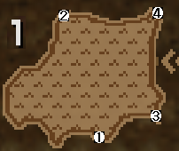

| 지역 | 장소 | 회수 | 투기 훈련 | 대투기장 | - | ||||
|---|---|---|---|---|---|---|---|---|---|
| [낙○함정○폭○뇌－]  | 1 | 7회 | 지급용 비약 | 12% | |||||
| 회복약G | 26% | ||||||||
| 원기 드링크 | 20% | ||||||||
| 응급약 | 42% | ||||||||
| 2 | ∞ | LV1 철갑유탄 | 30% | ||||||
| LV1 확산탄 | 40% | ||||||||
| LV3 철갑유탄 | 10% | ||||||||
| LV3 확산탄 | 20% | ||||||||
| 3 | 5회 | 작은 술통 폭탄 | 30% | ||||||
| 로켓 술통 폭탄 | 35% | ||||||||
| 지급용 큰술통폭탄 | 35% | ||||||||
| 4 | 4회 밤은 5회 | 지급용 섬광 구슬 | 52% | ||||||
| 지급용 구멍 함정 | 30% | ||||||||
| 휴대용 마비 함정 | 18% | ||||||||
| [낙○함정○폭○뇌－] | 1 | 6회 | 수면 연기 구슬 | 40% | |||||
| 진정 구슬 | 20% | ||||||||
| 회복 구슬 | 30% | ||||||||
| 격룡창의 열쇠 | 10% | ||||||||
| 2 | 6회 | 격룡창의 열쇠 | 15% | ||||||
| 지급용 구멍 함정 | 25% | ||||||||
| 분노 피리 | 15% | ||||||||
| 지급용 섬광 구슬 | 45% | ||||||||
| 3 | 4회 | 지급용 큰술통폭탄 | 50% | ||||||
| 휴대용 마비 함정 | 30% | ||||||||
| 격룡창의 열쇠 | 20% | ||||||||
| 4 | 4회 | 지급용 비약 | 45% | ||||||
| 휴대용 숫돌 | 7% | ||||||||
| 응급약 | 30% | ||||||||
| 휴대용 식량 | 18% | ||||||||